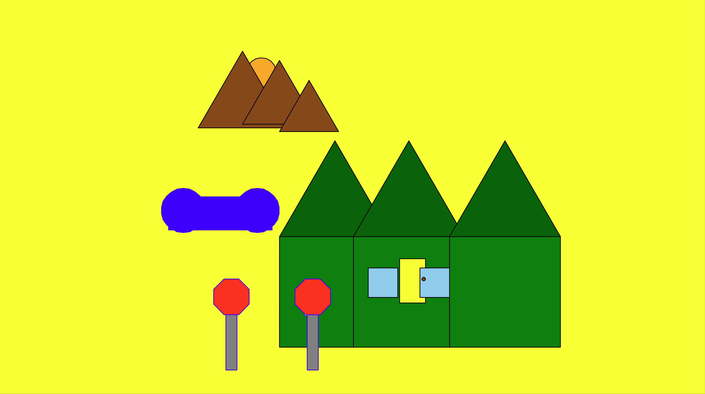

About the Project
Project 3 is about refactoring my original Turtle Graphics scene from Project 2 to make the code cleaner and easier to maintain. Instead of keeping all the drawing steps inside one large function, I break the program into many small helper functions that each handle a specific part of the scene. I also remove repeated code by introducing utility functions and parameterized drawing functions so the same logic can be reused in different places. Another goal of the project is to replace hard-coded values with named constants and parameters, which makes it simple to change colors, sizes, and positions later. After refactoring, I reuse these building blocks to recreate the original scene exactly as before, proving that the behavior has not changed. Finally, I extend the scene with extra objects to show how well-structured code makes creating a more complex and populated picture much easier.
Sample Code
The following sample shows a small utility function that combines positioning and drawing to reduce repetition in the rest of the program:
def place(t, x, y, fn, *args, **kwargs):
"""Utility: jump to (x,y) then call fn(t, *args, **kwargs).
This reduces repeated patterns of jumping and then drawing.
"""
jump_to(t, x, y)
return fn(t, *args, **kwargs)
In this sample, the place function acts as a utility that combines moving the turtle and calling a drawing function in one step.
It receives the turtle t, the x and y coordinates, a function fn to call, and any extra positional or keyword arguments that the drawing function needs.
Inside the function, jump_to is used to move the turtle to the requested location without drawing a line on the screen.
After the turtle is positioned, place calls fn(t, *args, **kwargs), which forwards all the extra arguments directly to the drawing function.
This helper removes a lot of repeated “jump, then draw” code and makes higher-level functions like draw_house_at and draw_stop_sign much easier to read, reuse, and maintain.
Final Scene
Below is the final turtle graphics scene produced by my refactored program:
The final picture shows a bright yellow background with a row of three green houses topped by dark green triangular roofs. The middle house has a yellow door with a small round doorknob and light blue windows, which stand out against the darker walls. To the left of the houses there is a curved blue pond shape, and in front of the scene two red octagonal stop signs stand on tall gray posts. Above the houses, a group of brown mountains rises in the distance with an orange sun partially hidden behind them. Altogether, the combination of geometric shapes and bold colors creates a playful neighborhood scene that clearly shows how different turtle primitives can be combined into a complete landscape.